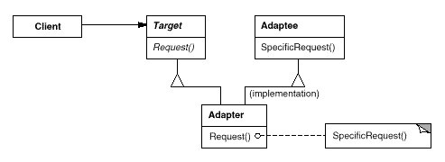
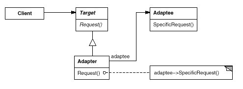

如果你知道电源适配器的作用，就应该很容易理解这个模式。
意图：
将一个类的接口转换成客户希望的另外一个接口。 Adapter模式使得原本由于接口不兼容而不能一起工作的那些类可以一起工作。
别名：
包装器 Wrapper
结构：
类适配器

对象适配器

适用：
以下情况使用Adapter模式
- 你想使用一个已经存在的类，而它的接口不符合你的需求。
- 你想创建一个可以复用的类，该类可以与其他不相关的类或不可预见的类（即那些接口可能不一定兼容的类）协同工作。
- （仅适用于对象Adapter）你想使用一些已经存在的子类，但是不可能对每一个都进行子类化以匹配它们的接口。对象适配器可以适配它的父类接口。
双向适配器：
一般适配器对使用target接口的透明，无法给使用adaptee接口的使用。双向适配器可以解决这个问题，使适配器更透明。
相关模式：
模式Bridge的结构与对象适配器类似，但是Bridge模式的出发点不同：Bridge目的是将接口部分和实现部分分离，从而对它们可以较为容易也相对独立的加以改变。而Adapter则意味着改变一个已有对象的接口。
Decorator模式增强了其他对象的功能而同时又不改变它的接口。因此Decorator对应用程序的透明性比适配器要好。结果是Decorator支持递归组合，而纯粹使用适配器是不可能实现这一点的。
模式Proxy在不改变它的接口的条件下，为另一个对象定义了一个代理。